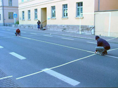

to the other.

"...Even artistic freedom has it's limits."
Be ready to show your I.D.
|
"Arena Mobile" Public intervention, by Nikos Arvanitis, Naomi T.Salmon, Mariela Limerutti, Sandra Nakamura, Bianca Scliar Mancini and Andrea Acosta. October 2005, Weimar, Germany. Arena Mobile took place in Weimar, in fall 2005. Exploring different possibilities of occupying public space, a group of artists from the Bauhaus University installed a soccer field in Marienstrasse, one of the main streets in town. The field was sized to fit the location, using architectural elements on the site as functional parts of the work. Coming from different countries, the artists played with the idea of transporting cultural practices, such as playing soccer in the streets, to another social and political reality, where such action is not allowed. As it was possible for everyone passing by to use the court, a conflict emerged between the predetermined function of the space and the new one given through the installation. Although it was possible for both sites, road and soccer field, to physically exist on the same location, the activities that they suggested could not take place simultaneously. The "ARENA MOBILE KIT" contains: 150 meters of white Gaffer-tape, one chalk, one meter of wire, one screw, old newspapers, 2 meters of black Gaffer-tape and a valid personal I.D. HOW TO: |
| 1. Purchase the "ARENA MOBILE KIT" | 2. Choose a site. |
|
3.Take preliminary measurements. | 4. Create a ball using old newspapers, three meters of white Gaffer-tape and two meters of black Gaffer-tape. |
|
5. Start by taping the goals one opposite to the other. |
6. Then mark the goal-area. |
| 7. Tape the side lines. Be aware of traffic. | 8. Mark and tape the middle-court lines |
|  | |
| 9. The court is ready | |
| 10. Now you can start playing. | |
|
| |
|
11. Busted!!! "...Even artistic freedom has it's limits." Be ready to show your I.D. | |
|
Close Window All content copyright 2006 Naomi Tereza Salmon - all rights reserved |